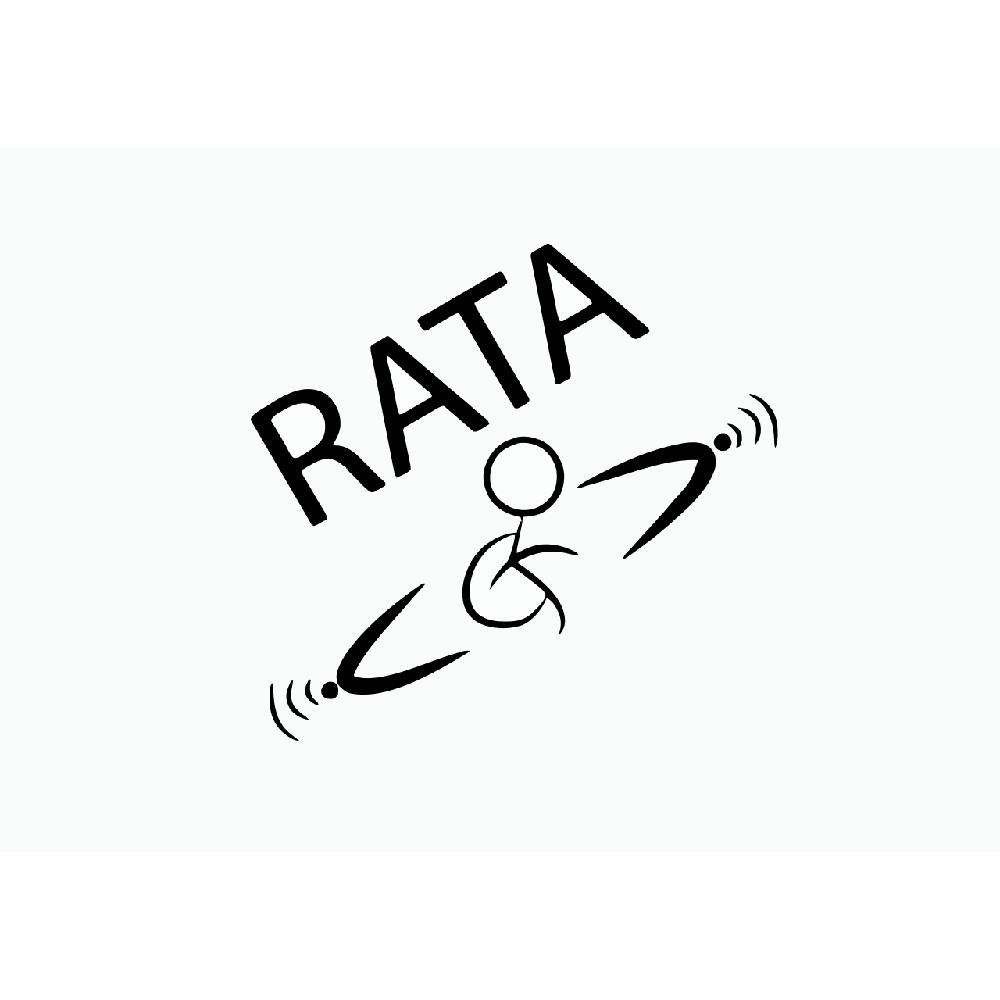
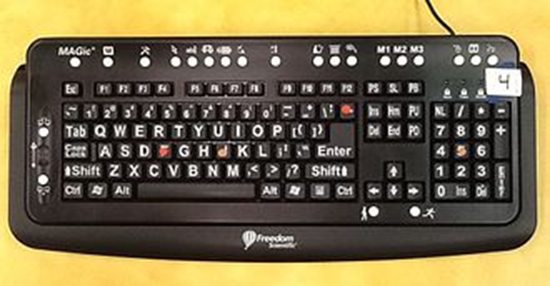
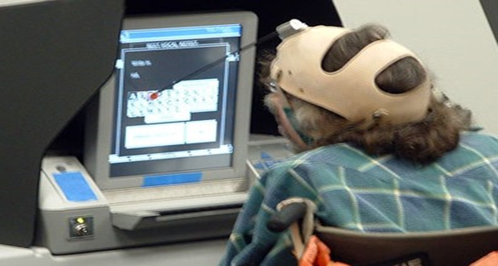

Assistive Technology (AT) is technology that is used by persons with disabilities to promote greater independence by enabling them to perform tasks that might otherwise be difficult or impossible.
It can include mobility devices such as walkers and wheelchairs, as well as hardware, software, and peripherals that assist people with disabilities in accessing computers or other information technologies.

This large-print keyboard has tactile elements and special keys for persons with visual impairment.

This voter with a manual dexterity disability is making choices on a touchscreen with a head dauber.
Stephen Hawking is one of the most well-known physicists in the world, and he was able to achieve that in spite of being diagnosed with ALS when he was 21. He can now only speak with the assistance of a computer and has been a full-time powerchair user since the 1980s. His best-selling work, A Brief History of Time, stayed on the Sunday Times bestsellers list for an astounding 237 weeks.
One of the most beloved singers alive today, Stevie Wonder is a musician, singer, and songwriter who was born blind. He was born six weeks early, and his blindness was caused by a condition where the blood vessels at the back of his eyes had not yet reached the front. Despite this, Stevie has recorded more than 30 U.S. top ten hits and has had a wildly successful music career.
Helen Keller was the first deaf and blind person to earn a college degree. Her story was famously portrayed in the play and film, The Miracle Worker. Despite her disabilities, she wrote 12 published books and was a member of the Socialist Party in America, campaigning heavily for women's rights and other labor rights.